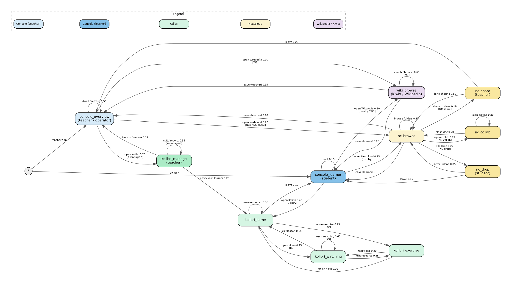

Status: Conceptual draft for discussion — supersedes /workspace/proposals/multi-engine-classroom-scenarios.md (2026-09-28).
Revision: 2026-09-30b — pointer to separate Operator Console Markov (multi-engine-operator.md). Usage Markov (Kolibri / Nextcloud / Wikipedia) unchanged.
Author: Steve (Lead Bot), 2026-09-29 (rev. 2026-09-30b)
Audience: Koen / IDEA leads
Companion capacity issue: idea#159 — measure safe concurrent Kolibri video streams per instance
Koen asked for a clean conceptual framing of why a school runs more than one Engine, how that looks with a small named fleet, what classroom scenarios matter, and how a Markov usage graph can drive realistic tests later.
This document stays conceptual. Implementation, discovery protocol, auth, Playwright harnesses, fleet claim scripts, and Engine code changes are explicitly out of scope here (see final section).
Prior drafting treated multi-Engine load distribution as an undocumented assumption. That was wrong.
It is already in the IDEA vision / solution description:
All Appdockers on the same LAN will automatically find one another and when a new Appdocker device is added, the catalog of available apps is automatically extended with the apps docked onto the new device.
Performance is optimized by adding Appdockers and redistributing the apps over the Appdockers.
Source: agent-engine-dev/proposals/solution-description.md
(local clones also under e.g. /workspace/research/agent-engine-dev/proposals/solution-description.md)
Referenced from idea/docs/grok-bot-setup.md as the Engine vision and intent doc.
The multi-Engine classroom story below extends that vision into classroom roles and usage scenarios; it does not invent the load-spread principle.
The physical act is simple: add an Engine and plug a demanding app into it.
This is the same physical metaphor as the rest of IDEA: capacity is improved by adding hardware and redistributing disks, not by asking teachers to become sysadmins.
Some apps hit a per-instance / per-Pi limit. Example: concurrent Kolibri video streams.
When one Kolibri instance cannot safely serve the whole class:
Capacity baseline for Kolibri (idea#159, idea01 Pi 5 / 4 GB). Multi-quality planning streams per instance (LAN measured SAFE ≥128 for all four; planning leaves Wi‑Fi / browser / Pi‑4 headroom):
| Quality | Resolution | Planning streams / instance |
|---|---|---|
| low | 360p (640×360) | 64 |
| medium | 480p (854×480) | 32 |
| prior / typical lesson | 720p (1280×720) | 32 |
| high | 1080p (1920×1080) | 12 |
Default classroom planning figure remains 32 @ ~720p; use 64 / 12 when content is known low / high. Load-test tooling: agent-app-dev#9.
Each class (or teaching block) can have its own Engine hosting class-only app instances — e.g. Class 5A Nextcloud, Class 5A Kolibri content — without isolating operators.
Any Console on any Engine can manage all apps across all Engines simply. Teachers and operators are not trapped on “their” Pi’s Console; the mesh presents one school.
Design target first: a named three-Engine school, then generalise to N.
| Name | Role (story) | Typical disks / instances |
|---|---|---|
| idea-A | Shared / school golden hub | Shared apps everyone uses lightly: offline Wikipedia (Kiwix), school-wide Nextcloud “School Files”, maybe a small shared Kolibri channel library. Stable reference Engine. |
| idea-B | Class Engine — Grade 5A | Class-only Kolibri (Grade 5A lessons/quizzes), class Nextcloud (Group “Grade 5A”: view-only shares, File Drop, collaborative docs). |
| idea-C | Class Engine — Form 3 | Class-only Kolibri (Form 3), class Nextcloud (Group “Form 3”). When Grade 5A video load overflows idea-B, a second Kolibri instance for 5A can also land here (reason 2). |
Classroom story: Monde Primary (or any Marco site) starts with one Engine in the room. When video buffering and “limit to one group at a time” become the norm (field troubleshooting already warns about many devices), the school adds idea-B and idea-C as classroom Engines. Teachers still open any Console; students still join appnet and pick apps from one list. Operators dock demanding class disks onto B/C and leave shared services on A.
The three-Engine model is the design target first. N Engines later means:
Discovery, Console overview, and “users don’t pick an Engine” stay the same rules; only inventory and assignment grow.
Discussable outcomes — not test scripts. Named UI scripts that expand Markov nodes live under Detailed UI scenarios.
Reason 1 — distribute apps / load
Reason 2 — scale one app
Reason 3 — per-class Engine + Console-anywhere
Usage / field-aligned (Marco)
K-manage-*, K2, K4.NC-share, NC-drop, NC-collab, NC1/NC2. Field note: many devices → performance drop → prefer one group at a time unless multi-Engine capacity is in play.W1.[L-entry], [K-manage-*], [W1]) mark where a transition is the start of a named UI script; the harness expands the destination node into ordered clicks.Operator Console Markov (separate): managing/altering the multi-Engine setup (login, NetworkTree, dock/eject, install, start/stop, copy/move, Files/Backup/erase, operators, settings) lives in sibling multi-engine-operator.md with graph files multi-engine-operator-markov.{dot,png,svg}. This classroom usage graph is unchanged aside from this pointer.
| Node | Who | Colour | Meaning | Scenario IDs that expand it |
|---|---|---|---|---|
console_overview |
Teacher / operator | blue | School-wide Engine/app status; opens apps as coach | entry for K-manage-*, NC1, W1 (teacher) |
console_learner |
Student | mid-blue | Same unified app list; student opens an app to work | L-entry |
kolibri_home |
Student or teacher | green | Kolibri signed in, Learn | K2 (learner start of lesson) |
kolibri_watching |
Student | green | Playing an assigned lesson video | K2, K3 (capacity dwell) |
kolibri_exercise |
Student | green | Doing an exercise in a lesson | K2 |
kolibri_manage |
Teacher | green (dark) | Classes, lessons, quizzes, Reports | K-manage-class, K-manage-enroll, K-manage-lesson, K-manage-quiz, K-manage-reports (+ composite K1 / K4) |
nc_browse |
Student or teacher | yellow | Nextcloud Files browse | hub for NC-share / NC-drop / NC-collab / NC1 |
nc_share |
Teacher | yellow (dark) | View-only share to a class group | NC-share |
nc_drop |
Student | yellow (dark) | Uploading to a File Drop | NC-drop |
nc_collab |
Student | yellow (dark) | Editing a shared collaborative doc | NC-collab |
wiki_browse |
Student or teacher | purple | Kiwix / offline Wikipedia on idea-A | W1 |
Graphviz source: multi-engine-markov.dot. Rendered:

stateDiagram-v2
[*] --> console_overview: teacher / op
[*] --> console_learner: learner
console_overview --> kolibri_manage: open Kolibri 0.20 [K-manage-*]
console_overview --> nc_browse: open Nextcloud 0.20 [NC1 / NC-share]
console_overview --> wiki_browse: open Wikipedia 0.10 [W1]
console_overview --> console_overview: dwell / refresh 0.50
console_learner --> kolibri_home: open Kolibri 0.40 [L-entry]
console_learner --> nc_browse: open Nextcloud 0.25 [L-entry]
console_learner --> wiki_browse: open Wikipedia 0.20 [L-entry / W1]
console_learner --> console_learner: dwell 0.15
kolibri_manage --> kolibri_home: preview as learner 0.20
kolibri_manage --> kolibri_manage: edit / reports 0.55 [K-manage-*]
kolibri_manage --> console_overview: back to Console 0.25
kolibri_home --> kolibri_watching: open video 0.45 [K2]
kolibri_home --> kolibri_exercise: open exercise 0.25 [K2]
kolibri_home --> kolibri_home: browse classes 0.20
kolibri_home --> console_learner: leave 0.10
kolibri_watching --> kolibri_watching: keep watching 0.60 [K3]
kolibri_watching --> kolibri_exercise: next resource 0.25
kolibri_watching --> kolibri_home: exit lesson 0.15
kolibri_exercise --> kolibri_home: finish / exit 0.70
kolibri_exercise --> kolibri_watching: next video 0.30
nc_browse --> nc_share: share to class 0.18 [NC-share]
nc_browse --> nc_drop: File Drop 0.22 [NC-drop]
nc_browse --> nc_collab: open collab 0.22 [NC-collab]
nc_browse --> nc_browse: browse folders 0.15
nc_browse --> console_learner: leave (learner) 0.13
nc_browse --> console_overview: leave (teacher) 0.10
nc_share --> nc_browse: done sharing 0.80
nc_share --> console_overview: leave 0.20
nc_drop --> nc_browse: after upload 0.85
nc_drop --> console_learner: leave 0.15
nc_collab --> nc_browse: close doc 0.70
nc_collab --> nc_collab: keep editing 0.30
wiki_browse --> wiki_browse: search / browse 0.65 [W1]
wiki_browse --> console_learner: leave (learner) 0.20
wiki_browse --> console_overview: leave (teacher) 0.15
How this maps to tests. Each Markov node is a coarse place someone can be (learner Console, teacher Console, Kolibri coaching, watching a video, Wikipedia, …). A transition is leaving that place for another. Inside a node, a real test does not invent a new node for every mouse click — that would explode the graph. Instead the harness expands the node into an ordered UI script (login → sidebar → form → Save) taken from Marco’s classroom presentations. Create an extra node only when the action changes who is acting, which app surface they are on, or resource pressure (e.g. video stream vs browse). Probabilities below are still placeholders. Scenario IDs in [brackets] on edges/nodes name the scripts under Detailed UI scenarios.
UI labels below match Marco’s field decks and quick-reference cards (kolibri-classroom-setup, kolibri-lessons-and-quizzes, nextcloud-user-registration, nextcloud-classroom-use, quick-reference-kolibri.md, quick-reference-nextcloud.md) — confirmed with Marco 2026-09-29. Console steps assume the school-wide app overview any Engine’s Console shows (reason 1 / 3). Exact selectors belong in the Playwright harness later — this doc names the human-visible controls.
console_overview — teacher / operator opens the ConsoleThe teacher or operator opens a browser on the school LAN (or already has Console open) and lands on the Engine / apps overview: Engines present, apps docked, status. They are inspecting what is available on the network, not choosing a “home” Pi. Operator-specific Console actions (dock/eject disks, start/stop instances, install/move/backup/erase, operators/settings) are not on this usage graph — see the separate Operator Console Markov: multi-engine-operator.md (O1–O18, multi-engine-operator-markov.*).
Concrete UI (when a walk starts here):
engine-1.local; multi-Engine story: idea-A / idea-B / idea-C Consoles must be equivalent).Scenario IDs started from here: K-manage-* (open Kolibri as teacher), NC1 / NC-share (open Nextcloud), W1 (open Wikipedia as teacher), plus dwell.
From here the walk can:
[K-manage-*] — click the Kolibri app (Running) → Sign in on Kolibri → go to kolibri_manage.[NC1 / NC-share] — click the Nextcloud app → Log in → go to nc_browse.[W1] — click the Kiwix / Wikipedia app (on idea-A) → go to wiki_browse.console_overview.Test note: opening an app is one transition; the login form that follows belongs to the destination node’s script, not a separate Console node.
console_learner — student opens the ConsoleThe learner entry that was missing from the earlier draft. A student opens Console, sees the same unified app list as teachers (reason 1 / S3), and opens an app to start work. They are not managing Engines — just picking Kolibri, Nextcloud, or Wikipedia.
Concrete UI (walk starts here — scenario L-entry):
Scenario IDs: L-entry (this node + open-app transitions); destination scripts K2 / NC-drop / NC-collab / W1 continue after landing.
From here the walk can:
[L-entry] → kolibri_home.[L-entry] → nc_browse.[L-entry / W1] → wiki_browse.console_learner.kolibri_manage — teacher in Kolibri coachingThe teacher is on Kolibri’s facility / coaching side (Classes, Lessons, Quizzes, Reports) — not the learner Learn tab. This node generalises several coaching tasks; a single visit expands into one of the K-manage-* scripts below (create class, enroll, build lesson, quiz, reports). The graph does not add nodes for “click Learners tab” vs “click Save” — those are steps inside the script.
Entry UI (always, if not already signed in):
Typical actions inside this node (pick one path per visit; stay in-node until done) — each row = one named scenario:
| Intent | Clicks (Marco) | Scenario ID |
|---|---|---|
| Create class | Left sidebar Classes → + New class → type name (e.g. Grade 5A) → Save |
K-manage-class |
| Enroll learners | Open class → Learners tab → Enroll learners → tick students → Confirm | K-manage-enroll |
| Build / enrich lesson | Class → Lessons → + New lesson (or open existing) → name → Add resources → pick video + exercise from Library / Channels → Save → set Recipients to the class → toggle Visible | K-manage-lesson |
| Create quiz | Class → Quizzes → + New quiz → Add questions from exercise channels → set count → Finish → toggle Active | K-manage-quiz |
| Read progress | Left sidebar Reports → Classes → class → Lessons or Quizzes → open item → scan learner table | K-manage-reports |
Scenario IDs that expand this node: K-manage-class, K-manage-enroll, K-manage-lesson, K-manage-quiz, K-manage-reports. Composite walks: K1 (class+enroll+lesson), K4 (quiz+reports with learner take).
From here the walk can leave to:
kolibri_home.[K-manage-*] — another coaching intent from the table → stay on kolibri_manage.console_overview.kolibri_home — learner on Kolibri LearnA student (or teacher previewing) is on the learner side after login.
Entry UI:
L-entry from console_learner, or teacher preview from kolibri_manage.)Scenario IDs: K2 (open video / exercise); learner half of K4 (open quiz).
From here:
[K2] — open lesson → click the video resource → player starts → kolibri_watching.[K2] — open lesson → click an exercise resource → kolibri_exercise.kolibri_home.console_learner (or close app).kolibri_watching — student in the video playerCapacity-sensitive node (reason 2 / idea#159). Many concurrent walkers here is what forces a second Kolibri instance. Planning N depends on video quality: 64 @ 360p / 32 @ 480p–720p / 12 @ 1080p (idea01 Pi 5 / 4 GB).
UI while here: video playing in-browser (no download); student may pause/seek; Kolibri records progress in the background.
Scenario IDs: K2 (playthrough), K3 (N walkers dwell for stream ceiling).
From here:
[K3] → stay on kolibri_watching.kolibri_exercise.kolibri_home.kolibri_exercise — student in an exerciseUI: exercise questions with immediate feedback; student answers and submits; Kolibri records started / completed / score.
Scenario IDs: K2 (exercise half of lesson).
From here:
kolibri_home.kolibri_watching.(Quiz-taking can reuse this node or stay inside kolibri_home → open Quizzes → Start → answer → submit; if quizzes become a distinct load profile later, split a kolibri_quiz node then. Mapped in scenario K4 / K-manage-quiz.)
nc_browse — anyone in Nextcloud FilesHub for Marco’s classroom file workflow. Files app is the central UI (manual p.12 in Marco’s deck).
Entry UI:
console_overview, student via L-entry / console_learner).Scenario IDs started from here: NC-share, NC-drop, NC-collab (and composite NC1).
From here:
[NC-share] → nc_share.[NC-drop] → nc_drop.[NC-collab] → nc_collab.nc_browse.console_learner.console_overview.nc_share — teacher sharing a folderMatches table / scenario NC-share (view-only materials row of the Nextcloud classroom workflow).
UI script (view-only materials):
Videos to watch).Class2A / Grade 5A) → select group.Group must already exist (Accounts → Groups → + — see scenario NC1 preload; that admin path can stay a preload step, not a graph node).
From here:
nc_browse.console_overview.nc_drop — File Drop uploadMatches scenario NC-drop.
Teacher prep (often preload, or expand inside a long nc_browse visit): Share icon on Drop Zone → + beside Create public link → File request → copy link (clipboard) → optionally paste into Talk.
Student UI (this node):
From here:
nc_browse (or close link).console_learner.nc_collab — live document editingMatches scenario NC-collab.
UI:
From here:
nc_browse.nc_collab.wiki_browse — Kiwix / offline WikipediaShared service on idea-A (school golden hub). Learners and teachers reach it from Console (L-entry / W1 from console_learner, or W1 from console_overview). Light load relative to Kolibri video — still a first-class classroom usage state.
Entry UI:
Scenario IDs: W1.
From here:
[W1] — type a query, open articles, follow links, dwell reading → stay on wiki_browse.console_learner.console_overview.These are test scripts, not extra Markov nodes. Each script names the Markov node(s) it expands and, where relevant, the matching table row. A walker that lands on kolibri_manage for “build lesson” runs K-manage-lesson; N concurrent kolibri_watching walkers are K3 (capacity). Preload content so every click target exists.
Mapping summary
| Scenario ID | Markov node(s) | Matches |
|---|---|---|
L-entry |
console_learner → kolibri_home / nc_browse / wiki_browse |
Learner opens Console, picks an app |
K-manage-class |
kolibri_manage |
Manage table: Create class |
K-manage-enroll |
kolibri_manage |
Manage table: Enroll learners |
K-manage-lesson |
kolibri_manage |
Manage table: Build / enrich lesson |
K-manage-quiz |
kolibri_manage |
Manage table: Create quiz |
K-manage-reports |
kolibri_manage |
Manage table: Read progress |
K1 |
console_overview → kolibri_manage (chains class+enroll+lesson) |
Composite of three manage rows |
K2 |
console_learner → kolibri_home → kolibri_watching / kolibri_exercise |
Student completes assigned lesson |
K3 |
N× kolibri_watching dwell |
Stream ceiling / S4 / idea#159 |
K4 |
kolibri_manage (K-manage-quiz + K-manage-reports) + learner quiz take |
Quiz + Reports |
NC-share |
nc_browse → nc_share |
View-only share to class group |
NC-drop |
nc_browse → nc_drop |
File Drop upload |
NC-collab |
nc_browse → nc_collab |
Collaborative doc edit |
NC1 |
console_overview → nc_browse + share/drop/collab |
Composite S10 teacher→students |
NC2 |
console_overview (idea-A) → class NC on idea-B |
Manage from other room / S7 |
W1 |
console_* → wiki_browse |
Open Kiwix, search/browse, leave |
C1 |
console_overview dwell / open-app |
Add Engine, app appears everywhere / S1 |
L-entry — Student opens Console and starts workRole: student · Engines: any Console; destination app may be on idea-A (Kiwix), idea-B (class Kolibri/Nextcloud), etc.
Markov: * → console_learner → (kolibri_home | nc_browse | wiki_browse).
kolibri_home (continue with K2), ornc_browse (continue with NC-drop / NC-collab), orwiki_browse (continue with W1).K-manage-class — Create classRole: teacher · Markov: console_overview → kolibri_manage (self-loop / visit).
Table row: Create class.
kolibri_manage.Grade 5A) → Save.kolibri_manage or back to console_overview.K-manage-enroll — Enroll learnersRole: teacher · Markov: kolibri_manage.
Table row: Enroll learners. Requires class (preload or K-manage-class).
kolibri_manage or leave to Console.K-manage-lesson — Build lesson + assignRole: teacher · Markov: kolibri_manage.
Table row: Build / enrich lesson.
Week 1: Fractions Introduction).kolibri_manage, preview as learner → kolibri_home, or back to Console.K-manage-quiz — New quizRole: teacher · Markov: kolibri_manage.
Table row: Create quiz.
kolibri_manage (often followed by K-manage-reports after learners take it — see K4).K-manage-reports — Read ReportsRole: teacher · Markov: kolibri_manage.
Table row: Read progress.
kolibri_manage or back to console_overview.K1 — Teacher prepares Grade 5A lesson (composite)Role: teacher · Engines: Console on idea-A or idea-B; Kolibri on idea-B.
Markov: console_overview → kolibri_manage (chains K-manage-class → K-manage-enroll → K-manage-lesson, optional K-manage-reports).
console_overview → kolibri_manage.K-manage-class (skip if class preloaded).K-manage-enroll.K-manage-lesson (video + exercise, Visible).K-manage-reports (empty progress yet).kolibri_manage self-loop) or preview as learner → kolibri_home, or back to Console.K2 — Student completes assigned lessonRole: student · Engine: same Kolibri as teacher prep.
Markov: console_learner [L-entry] → kolibri_home → kolibri_watching / kolibri_exercise.
L-entry: Console → Open Kolibri → login learner credentials → kolibri_home.Grade 5A → open assigned lesson.kolibri_watching (play through or paced load-test equivalent).kolibri_exercise → answer items → submit.kolibri_home, or leave to console_learner.K3 — Class hits stream ceiling (reason 2 / S4)Setup: lesson with a video pre-visible; idea#159 planning N by quality — 64 @ 360p / 32 @ 480p–720p / 12 @ 1080p (idea01 Pi 5 / 4 GB).
Markov: N walkers dwell in kolibri_watching (still one node — concurrency is walker count).
K2 steps 1–3 and dwell in kolibri_watching.K4 — Quiz + ReportsMarkov: kolibri_manage (K-manage-quiz + later K-manage-reports) + short learner visit on kolibri_home / exercise-like load.
K-manage-quiz (Active).kolibri_home via L-entry): class → Quizzes → Start → answer → submit (treat as exercise-like load or keep under home until a quiz node is justified).K-manage-reports on that quiz → read scores / drill into a learner.NC-share — View-only share to class groupRole: teacher · Markov: nc_browse → nc_share → nc_browse.
Matches: Nextcloud classroom “share materials view-only” row.
Videos to watch) → Share.Grade 5A) → permission View only.nc_browse (or leave to console_overview).NC-drop — File Drop homework uploadRole: student (teacher prep optional) · Markov: nc_browse → nc_drop → nc_browse / console_learner.
Matches: File Drop / file-request row.
Drop Zone → Share → public link + → File request → copy link.nc_drop.nc_browse or leave to console_learner.NC-collab — Collaborative documentRole: student (teacher create often preload) · Markov: nc_browse → nc_collab.
Matches: collaborative doc row.
nc_collab) → close → nc_browse.NC1 — Teacher share + File Drop + collab (S10 composite)Role: teacher then students · Engine: class Nextcloud on idea-B.
Markov: console_overview → nc_browse + NC-share / NC-drop / NC-collab.
nc_browse (teacher login).Grade 5A; + New account students into that group.NC-share on Videos to watch.Drop Zone (Talk optional: top menu Talk → + conversation → share link).L-entry: open shared folder (nc_browse); run NC-drop; run NC-collab.NC2 — Manage class Nextcloud from another room (S7)Markov: console_overview on idea-A while class NC runs on idea-B.
console_overview) while Grade 5A Nextcloud runs on idea-B.NC1 / NC-share steps.W1 — Browse offline Wikipedia (Kiwix on idea-A)Role: learner or teacher · Engine: Kiwix on idea-A.
Markov: console_learner or console_overview → wiki_browse (self-loop) → leave to matching Console.
wiki_browse.console_learner (student) or console_overview (teacher).C1 — Add Engine, app appears everywhere (S1)multi-engine-operator.md scenarios O4 / O9 / O6.)kolibri_manage / kolibri_home / nc_browse as usual.console_overview / console_learner dwell / open-app transitions; assertion is catalog equality across Consoles.console_learner → kolibri_home → … → kolibri_watching (N concurrent walkers = N “students” hitting video — bounded by idea#159 quality table), or console_overview → kolibri_manage for coaching scripts.Full YAML / runner design stays with the existing Markov duration-tests proposal (agent-engine-dev/proposals/duration-tests.md, idea#85) when implementation starts — not here.
| Source | Use |
|---|---|
agent-engine-dev/proposals/solution-description.md |
Vision: autofind Appdockers; add Appdockers + redistribute apps for performance |
/workspace/proposals/multi-engine-classroom-scenarios.md (+ .pdf) |
Prior draft — superseded (implementation-heavy; incorrectly framed multi-Engine as undocumented) |
Marco / programme-manager: presentations/kolibri-classroom-setup, kolibri-lessons-and-quizzes, nextcloud-user-registration, nextcloud-classroom-use; reference-cards/quick-reference-kolibri.md, quick-reference-nextcloud.md |
Exact UI labels for Markov story + scenarios (Classes, Learn, Share, File request, …) |
Marco field: field/troubleshooting-guide.md (via prior draft + local copy) |
Many devices → performance drop; limit one group at a time |
agent-engine-dev/proposals/duration-tests.md |
Existing Markov duration-test design (implementation later) |
| idea#159 (+ multi-quality comment) | Kolibri concurrent stream capacity — planning 64/32/32/12 by quality |
Flagged for later proposals / issues — not designed here:
multi-engine-operator.md + multi-engine-operator-markov.* (kept separate from this usage graph)When Koen agrees the conceptual shape, Steve can split follow-ups (Engine / Console / App Dev / Ops) without baking premature design into this doc.
console_learner) + Wikipedia (wiki_browse) + K-manage-* ↔ manage table wiring. multi-engine-operator.md).